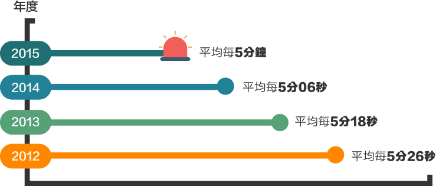
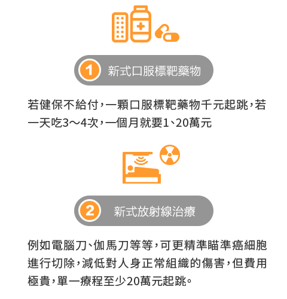
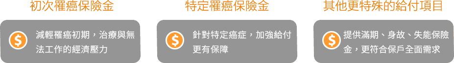
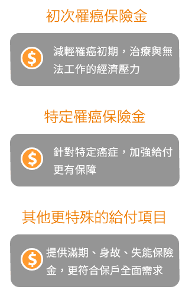

每年超過10萬人罹患癌症
台灣很多人「聞癌色變」，癌症已連續35年蟬聯國人十大死因之首，而根據衛福部公布的最新癌症登記報告指出，2015年有10萬5156人罹患癌症，是繼2014年首次超過10萬人罹癌後，再次創新高。
癌症時鐘加快，每5分鐘，就有1人罹癌

癌症治療貴鬆鬆，讓人看了心驚驚
癌症讓人心驚驚，但最可怕，是它的治療費用，除了傳統手術，現在加了很多新式療法，例如標靶藥物、化療新藥、放射線治療等等，雖然較有療效，但大多數健保不給付，恐造成民眾難以負擔的巨額開銷。

善用癌症險多元保障，不再「聞癌色變」
為了不因罹癌而拖垮家庭經濟，建議可提前購買癌症險，透過其多元的保障項目，轉嫁癌症治療期間所產生的龐大開銷，讓民眾可以安心治療。


除了癌症險，還有重大疾病險、一次給付癌症險，也可作為轉嫁癌症治療費用的好工具。建議先了解癌症險的特色與內容，讓自己不再聞癌色變！